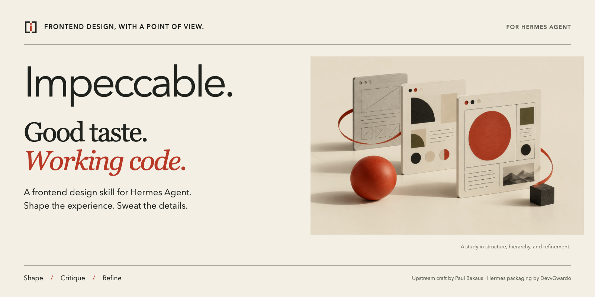
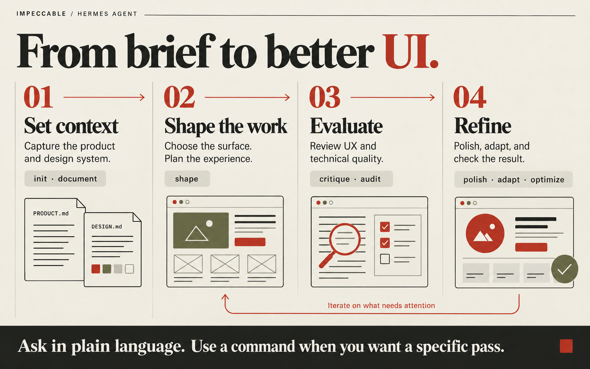
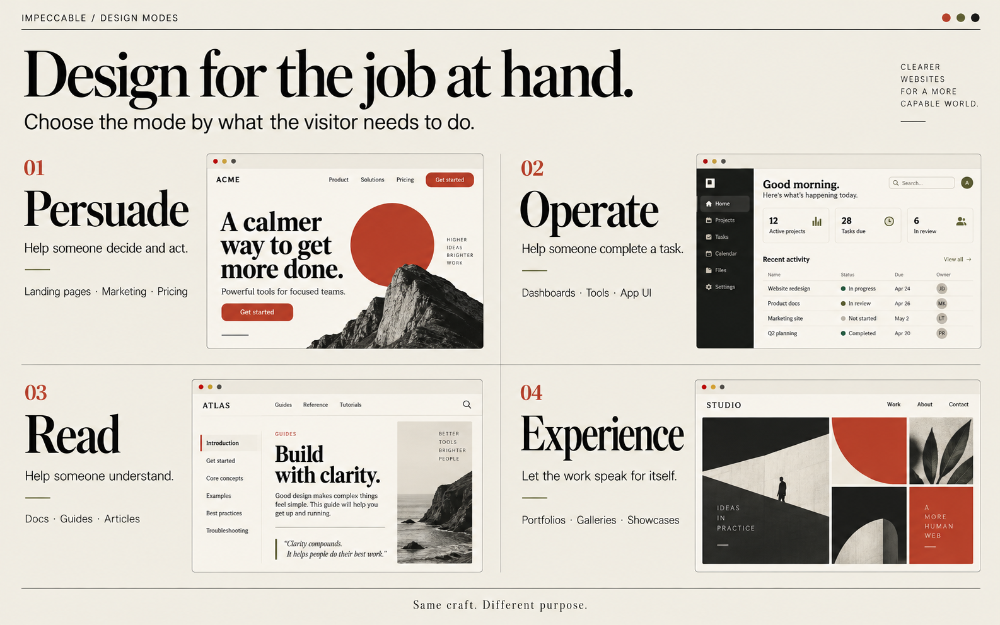

Impeccable.
Impeccable.A frontend design skill for Hermes AgentGood taste.
Good taste.
Working code.
Design is more than a finishing pass. Set the context, shape the experience, and refine the details with Impeccable. Built on Paul Bakaus’s upstream skill, packaged for Hermes Agent.


01
From brief to better UI.
An example workflow, not an automatic pipeline. Ask naturally, or choose the pass your project needs.


- Set context
initcaptures product context in PRODUCT.md.documentderives DESIGN.md from existing code. - Shape the work
shapeplans the UX and UI before implementation. - Evaluate
critiquereviews UX.auditchecks accessibility, performance, and responsive behavior. - RefineChoose focused passes such as
polish,adapt, oroptimize, then verify the result.
02
Purpose sets the direction.
Persuade helps people decide. Operate helps them act. Read helps them understand. Experience lets the work lead.


03
Less noise. More intent.
Warm paper, precise rules, expressive serif type, and one decisive accent.
Paper#F3EFE5
Ink#20221E
Vermilion#B93927
Olive#666B45
The bracketed “i” mark belongs to this package’s presentation, not to Hermes or upstream Impeccable. The generated imagery illustrates design concepts, not benchmarked results. See the asset and rendering guide for sources and usage.